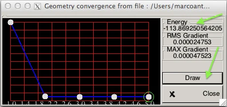

Otimização e energia de ionização
Energia de ionização
A energia de ionização (EI) é a diferença de energia entre o estado ionizado e o estado fundamental da molécula. Ela pode ser calculada de duas formas:
- Vertical (princípio de Franck-Condon): energia do cátion na geometria otimizada da molécula neutra menos a energia da molécula neutra.
- Adiabática: energia do cátion na sua própria geometria otimizada menos a energia da molécula neutra otimizada.
Aqui as geometrias são otimizadas no nível de teoria escolhido, e não tiradas de dados experimentais.
Otimização do formaldeído
Otimize a geometria do formaldeído no nível HF/6-31G**. A otimização é feita com a palavra-chave Opt e termina quando a
estrutura converge. Use também Freq para caracterizar o ponto estacionário encontrado (veja Frequências e termoquímica).
! HF 6-31G** TightSCF Opt FreqNa saída, a otimização começa com:
*****************************
* Geometry Optimization Run *
*****************************Os critérios de convergência usados pelo programa aparecem logo depois; todos podem ser alterados:
Convergence Tolerances:
Energy Change TolE .... 5.0000e-06 Eh
Max. Gradient TolMAXG .... 3.0000e-04 Eh/bohr
RMS Gradient TolRMSG .... 1.0000e-04 Eh/bohr
Max. Displacement TolMAXD .... 4.0000e-03 bohr
RMS Displacement TolRMSD .... 2.0000e-03 bohrCada ciclo começa com:
*************************************************************
* GEOMETRY OPTIMIZATION CYCLE 1 *
*************************************************************Você também pode acompanhar a otimização pela tabela abaixo. Neste caso, ainda não convergiu:
----------------------|Geometry convergence|---------------------
Item value Tolerance Converged
-----------------------------------------------------------------
RMS gradient 0.01688773 0.00010000 NO
MAX gradient 0.03556546 0.00030000 NO
RMS step 0.03312567 0.00200000 NO
MAX step 0.04807470 0.00400000 NO
....................................................
Max(Bonds) 0.0254 Max(Angles) 2.11
Max(Dihed) 0.00 Max(Improp) 0.08
-----------------------------------------------------------------
The optimization has not yet converged - more geometry cycles are neededAo convergir, todos os critérios ficam YES e aparece a mensagem de sucesso:
----------------------|Geometry convergence|---------------------
Item value Tolerance Converged
-----------------------------------------------------------------
Energy change -0.00000025 0.00000500 YES
RMS gradient 0.00007708 0.00010000 YES
MAX gradient 0.00019856 0.00030000 YES
RMS step 0.00014338 0.00200000 YES
MAX step 0.00028899 0.00400000 YES
-----------------------------------------------------------------
***********************HURRAY********************
*** THE OPTIMIZATION HAS CONVERGED ***
*************************************************Outra forma de acompanhar é pelo GABEDIT: clique em Geom. Conv. para ver a energia em cada passo (durante o cálculo, clique de novo para atualizar o gráfico). Note que a energia converge. Para ver a geometria, clique em Draw.

A energia final do sistema:
------------------------- --------------------
FINAL SINGLE POINT ENERGY -113.869250572037
------------------------- --------------------Calculando a energia de ionização
- Otimize a molécula neutra (feito acima) e anote a energia final.
- Faça um cálculo single point do cátion na geometria otimizada da molécula neutra. A diferença de energia é a EI vertical.
- Otimize o cátion. A diferença entre a energia final do cátion e a da molécula neutra otimizada é a EI adiabática.
- Converta de hartree para eV (1 Eh = 27,2114 eV) e compare com os valores experimentais: 10,88 eV para o formaldeído e 10,51 eV para o eteno.
Repetir os cálculos em outros níveis de teoria (por exemplo, HF/STO-3G, HF/6-311++G** e B3LYP/6-311++G**) mostra como a base e o método afetam as geometrias e as energias de ionização.
UHF ou UKS).